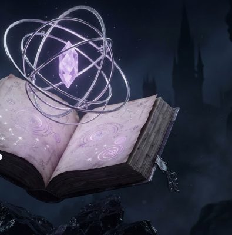
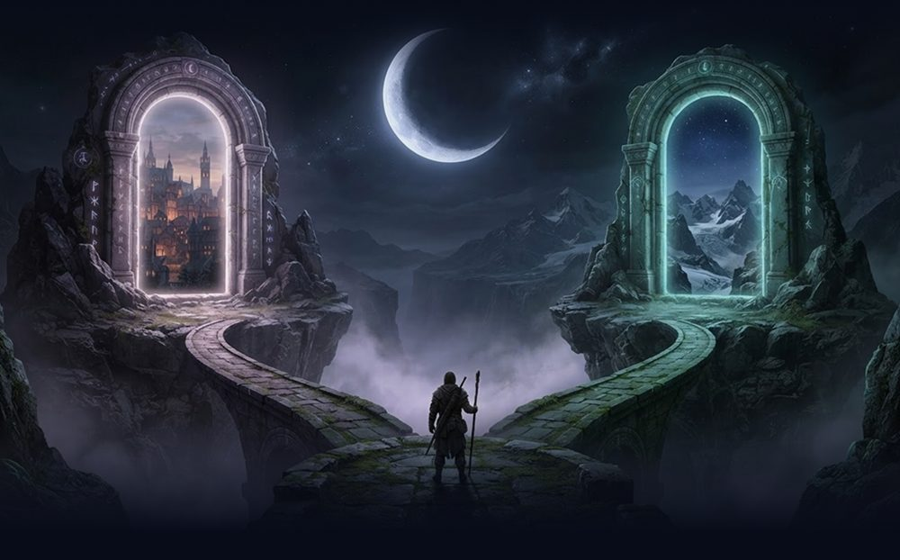

X-one
Exceptional Someone
You Build
Your Life
Every choice opens a new possibility.
BECOME YOUR POSSIBILITY
These are possibilities not predictions
X-oneExceptional Someone
01 / 03
— THE ORIGIN CHAPTER
Every legend
starts with you.
A few earthly details.
A whole universe of possibility.

YOUR CHARACTER SHEET
No perfect answers. Just your very human magic.
X-oneExceptional Someone
02 / 03
THE PLOT-TWIST JOURNAL
Let's untangle
the plot.
No epic essays. A few honest lines.
Overthinking
Time
Money
No clear path
Confidence
Your pace. Your story. You can edit this later.
X-oneExceptional Someone
03 / 03
THE CROSSROADS
Your next chapter.
One you reimagine. Or one you discover.

CHOOSE YOUR PATH
No wrong door. Just a different beginning.
Possibilities, not predictions.
X-oneExpand Possibilities
05 / 06
✦ THE X FACTOR
Behind the Lines
Six months from now, what might life feel like?
Open a path. Imagine the everyday beyond it.
✦ A possible story, not a prediction.
No choice is final. Notice what resonates.
X-oneExpand Possibilities
06 / 06
✦ THE X FACTOR
Reflection & Insight
Pause with the futures you imagined.
Which one feels more like you?
What feels right for you?
Not the perfect answer. Just the direction that resonates with who you are becoming.
Your choice:
Your next chapters will follow this direction.
Neither path is the right one. This story is yours.
X-oneExpand Possibilities
DAY 01
✦ YOUR JOURNEY BEGINS ✦
The First Move
A
YOUR CHOSEN PATH
✓
YOUR OPENING LINE
Make it sound like you. Send it when you're ready.
X-oneExpand Possibilities
QUEST
✦ THE REAL ADVENTURE
Choose your quest
Behind the Lines showed what could be.
Now pick something real to do.
Real missions. Real proof. Your pace.
X-oneExpand Possibilities
YOUR QUEST
The journey map comes next.
X-oneExpand Possibilities
STEPS
Prototype: evidence is self-confirmed and not independently verified.